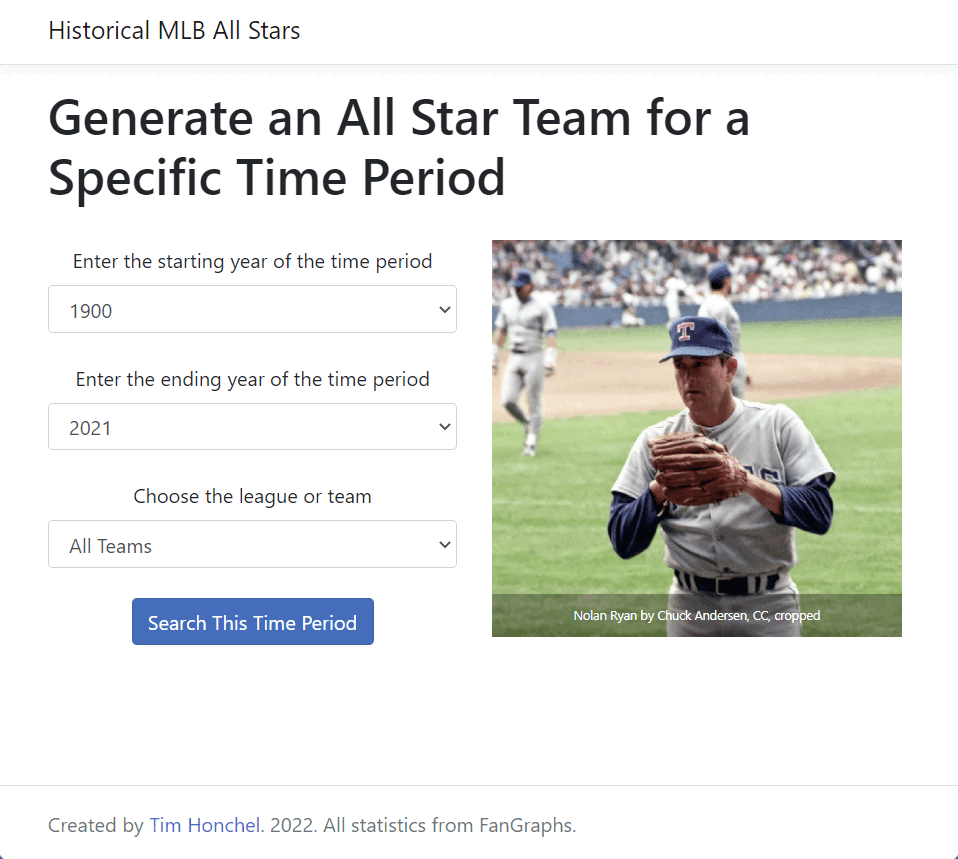
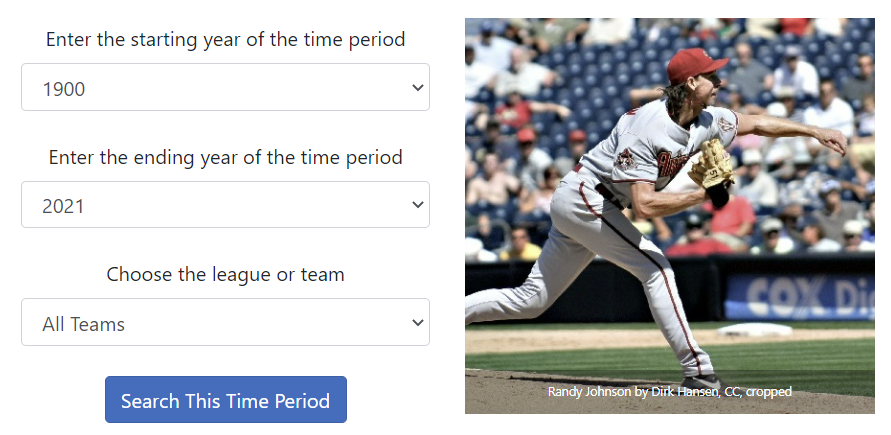

MLB Historical All Stars
Choose a starting and ending year and generate an All Star team of the top players during that time period.
Application
Updated 2022.03.09.
Special Features:
- Asynchronously scrapes multiple Fangraphs webpages for data
- Parsing methods isolate individual statistics and assign them to a player object
- Sorting methods and roster construction logic to determine the top 25 players
- Saves results to database so that future searches are near-instantaneous
Operating Instructions
Enter a starting and ending year between 1900 and 2021.
Choose "All Teams", a league, or a specific team.
Click "Search." It may take several seconds to load.
Displays the top players during that time period.
Development
The project was edited in Visual Studio using C#, SQL Server, Entity Framework, HTML, CSS, and JavaScript in ASP.NET Core MVC. Git was used for version control. Deployed with Azure.
Goals
- Customizable time period
- Automatic roster construction
- All information in one place
User Stories
- Enter a time period to search
- See the top MLB players in that time period
- Assemble those top players into a realistic 25 man roster
- See the All-Stars most relevant statistics
- Generate a new search